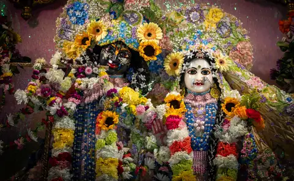

За нас
Какво е Кришна съзнание
Кришна съзнание означава да живеем с осъзнаване на връзката си с Бога: да възстановим естествената си любов към Него и към всички живи същества.
„Кришна“ е едно от имената на Бога в санскритската традиция и означава „всепривличащият“: този, който е източник на всичко и притежава в пълнота красотата, силата, славата, богатството, знанието и отречението. Да си в „Кришна съзнание“ не означава да приемеш чужда култура, а да съживиш нещо вродено: всяка душа по природа е свързана с Бога и търси трайно щастие, което материалният свят не може да даде.

Нашето изповедание учи, че живото същество не е тялото, а вечна духовна искра, душа, която преминава през различни тела и прераждания, водена от закона на кармата. Целта на човешкия живот е да се събуди от това забравяне и да възстанови любящата си връзка с Бога. Методът, който традицията предлага за днешната епоха, е изненадващо прост и достъпен: възпяването на светите имена на Бога, особено на маха-мантрата „Харе Кришна“.
Кришна съзнанието е монотеистична традиция: признаваме един-единствен Върховен Бог, който има безброй имена и форми. То не противоречи на искреното следване на която и да е автентична религия, напротив, уважава всеки път, който води човека към любов към Бога. Същевременно е цялостна духовна наука със свое богословие, етика, практика и начин на живот, предадени през непрекъсната верига от учители.
Какво ни отличава
- Бог е личност. Вярваме, че Абсолютната Истина в крайна сметка е личност, изпълнена с любов, а не безлична сила.
- Душата е вечна. Истинското „аз“ не загива със смъртта на тялото.
- Бхакти: пътят на предаността. Любящото служене на Бога е същината на духовния живот.
- Свещеното слово. Бхагавад-гита и Шримад Бхагаватам са нашите основни писания.
- Ненасилие и състрадание. Вегетарианството и грижата за всички същества са естествена част от практиката.